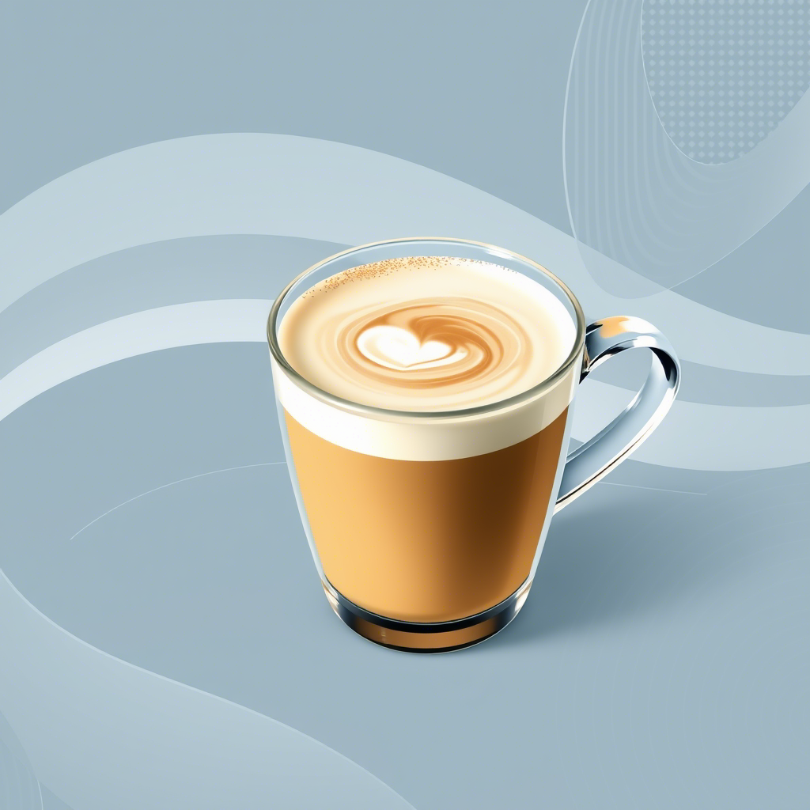

Digital Brews
> System Overclock (Strong)
Espresso 'Glitch'
A pixel-perfect shot of pure energy. Like a CRT screen firing up.
Taste: Sharp digital buzz
Ristretto 'DOS Mode'
Concentrated like a 90s command prompt—no fluff.
Taste: Raw processing power
> Background Tasks (Smooth)

Latte 'Aero Dream'
Smooth as a Windows 98 screensaver.
Taste: Cloud-soft with honey notes
Cappuccino 'Y2K Foam'
Equal parts espresso, milk, and froth—like an RGB slider.
Taste: Balanced with cocoa pixels
> Peripheral Support (Other)

'Soft Error' Herbal Tea
The blue screen of death for your anxiety.
Taste: Chamomile + mint reboot